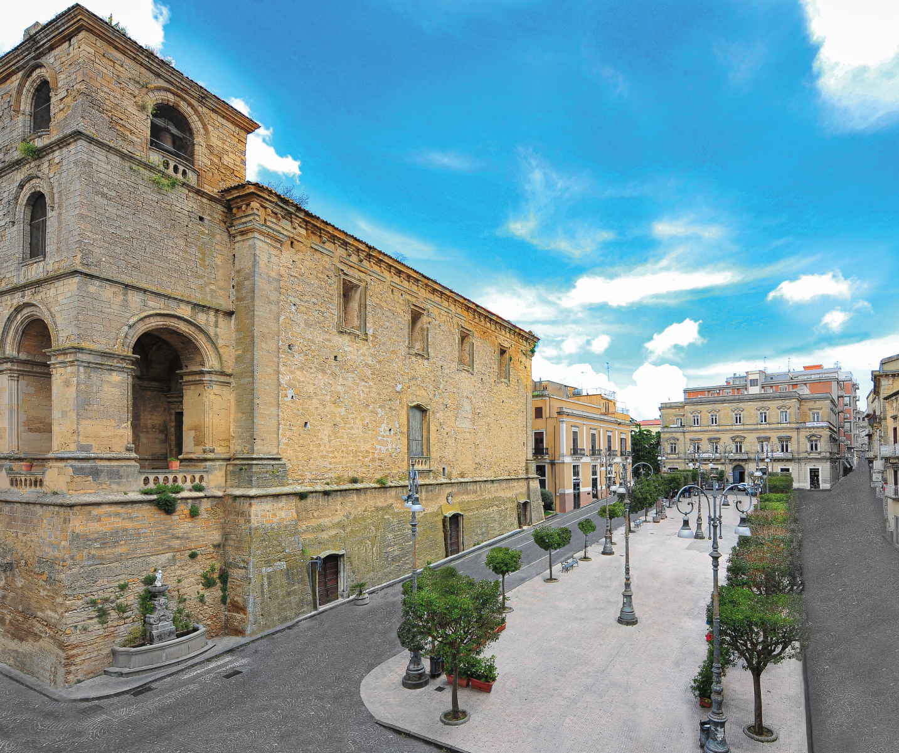
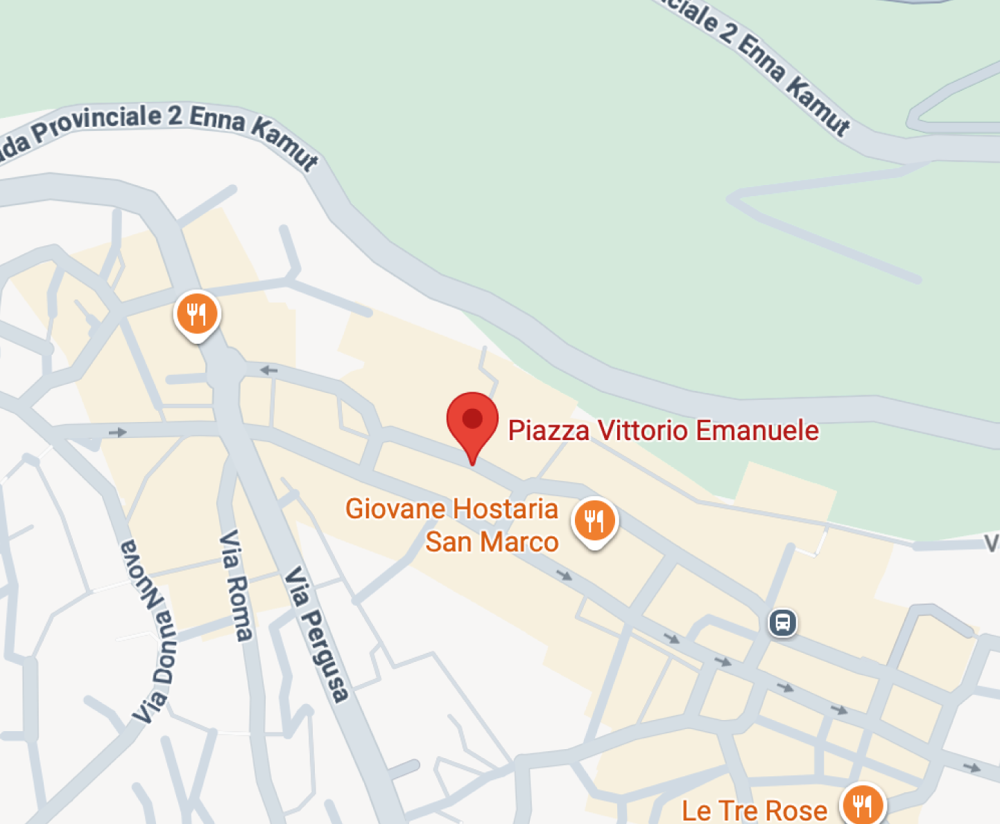

Enna, la ciudad más alta de Sicilia, ofrece vistas panorámicas impresionantes. Su historia está marcada por la importancia estratégica y las leyendas mitológicas que la rodean, como el rapto de Proserpina. Las calles empedradas, iglesias y edificios históricos narran siglos de cultura y tradición, mientras la naturaleza circundante proporciona un telón de fondo único para cualquier visitante.
PIAZZA VITTORIO EMANUELE


Piazza Vittorio Emanuele se sitúa en Enna, la capital de provincia más alta de Italia, y ha sido históricamente un punto estratégico de control del territorio siciliano. Debido a su posición elevada, la plaza funcionó como lugar de reunión y defensa para las distintas civilizaciones que ocuparon la isla. Su entorno está ligado al mito del rapto de Proserpina, relacionado con la fertilidad de la tierra, y a la importancia de Enna como centro de gestión del grano, del que dependía la prosperidad o el hambre de Sicilia.
CASTELLO DI LOMBARDIA
Visitar el Castello di Lombardia es esencial para contemplar las vastas tierras sicilianas desde sus murallas. Cada atardecer convierte la ciudad en un escenario casi mágico. Además, los festivales tradicionales y los mercados locales permiten sumergirse en la vida cotidiana y en la riqueza cultural de Enna.